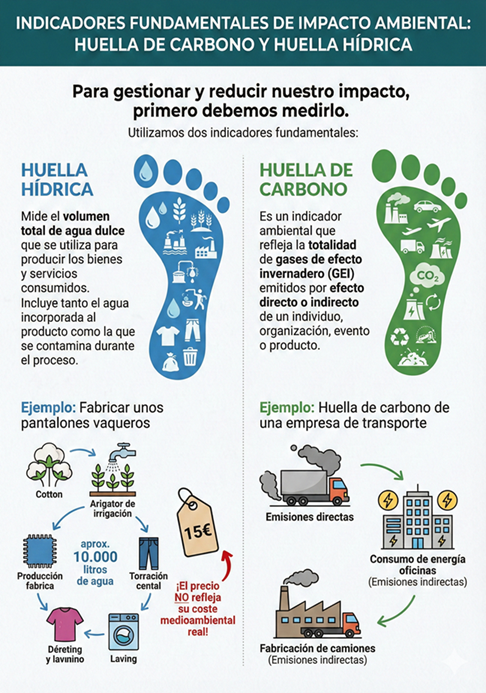
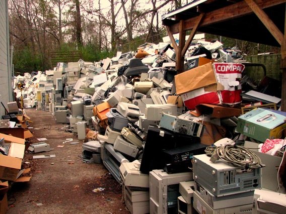

💸 El problema del precio pagado
Para gestionar y reducir nuestro impacto en el planeta, primero debemos medirlo
Ese coste oculto (contaminación, agotamiento de agua, emisiones) es lo que llamamos la huella de nuestro consumo.
Para gestionar y reducir nuestro impacto en el planeta, primero debemos medirlo
Ese coste oculto (contaminación, agotamiento de agua, emisiones) es lo que llamamos la huella de nuestro consumo.
Las huellas de nuestro consumo se suelen medir a partir de dos grandes métricas:
Mide la totalidad de gases de efecto invernadero (GEI), como el CO2, emitidos de forma directa o indirecta por un individuo, organización, evento o producto.
Mide el volumen total de agua dulce utilizada para producir los bienes y servicios que consumimos.

Es el momento de enfrentarte al espejo. ¿Cuántos planetas Tierra necesitaríamos si todo el mundo consumiera lo mismo que tú?
🔎 Haz clic en los siguientes enlaces para calcular tu impacto real (te sorprenderán los resultados)
¿Te has fijado que tu móvil parece ir más lento justo cuando sale el nuevo modelo al mercado? No es casualidad. El gran motor de este modelo de consumo descontrolado es la obsolescencia
Principalmente nos enfrentamos a dos tipos:
La vida útil del producto está limitada a propósito por el fabricante.
Las modas y el marketing nos hacen creer que algo que todavía es perfectamente útil ya es "viejo" o está desfasado.
🆘 La consecuencia directa es la generación masiva de RAEE (Residuos de Aparatos Eléctricos y Electrónicos)

Minería Urbana. En lugar de abrir nuevas minas en la naturaleza destruyendo ecosistemas, podemos recuperar metales preciosos (como oro, litio o cobre) directamente de los ordenadores y móviles desechados
Si quieres entender cómo empezó esta trampa mundial (desde la primera bombilla hasta las impresoras modernas), te recomendamos este galardonado documental de RTVE. Cambiará para siempre tu forma de ir de compras.
Además de la evidente contaminación por basuras físicas o residuos sólidos, existen tres formas de contaminación mucho menos visibles, pero con un alto coste económico y sanitario.
La contaminación lumínica es la excesiva, innecesaria o mal dirigida luz artificial durante la noche, alterando la oscuridad natural del cielo.
Es el exceso de ruido (provocado por tráfico de coches, industria, ocio, incluso nuestras aulas ...).
Contaminación del aire con micropartículas invisibles al ojo.
Afortunadamente, evitar estas contaminaciones ya no es solo una cuestión ética, sino un requisito legal cada vez más estricto para las empresas e instituciones
Pero, también depende de vosotros...
🤔 Reflexionad sobre, por ejemplo, el ruido que provocamos en las aulas cuando no mantenemos el silencio o hablamos gritando... El cambio empieza en las cosas más cotidianas.
Obra publicada con Licencia Creative Commons Reconocimiento No comercial Compartir igual 4.0